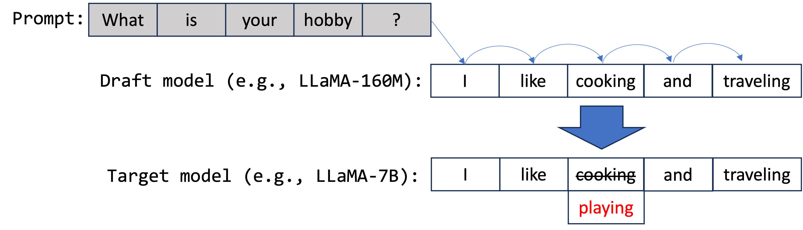
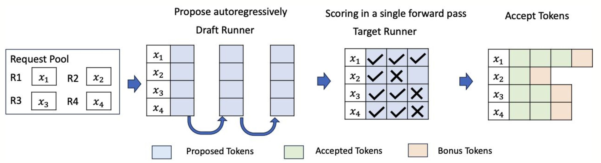
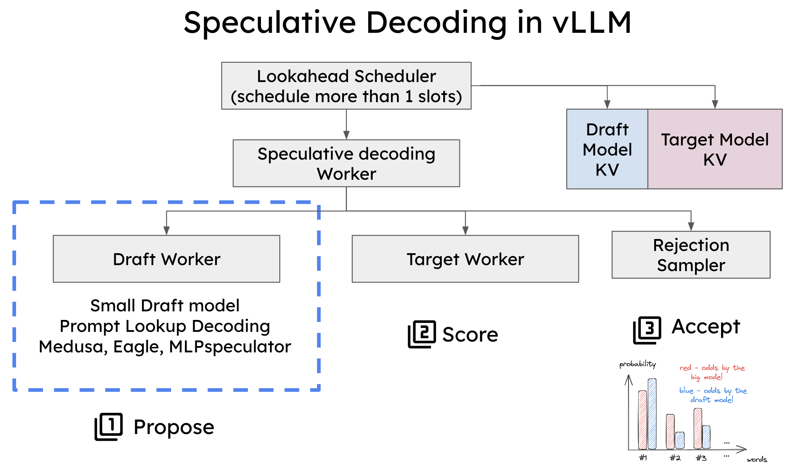
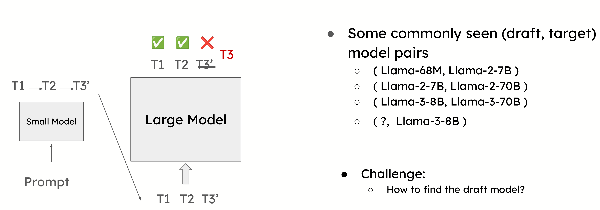
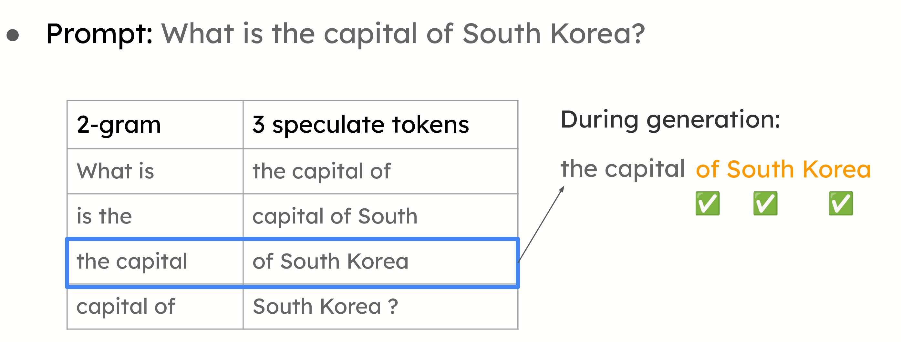
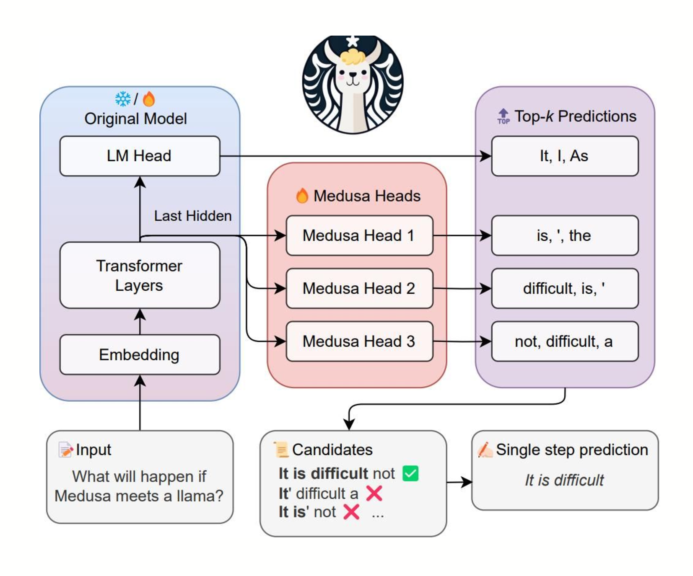
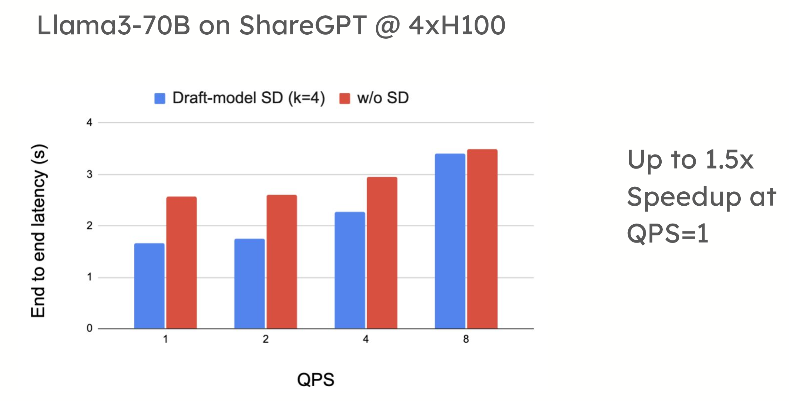
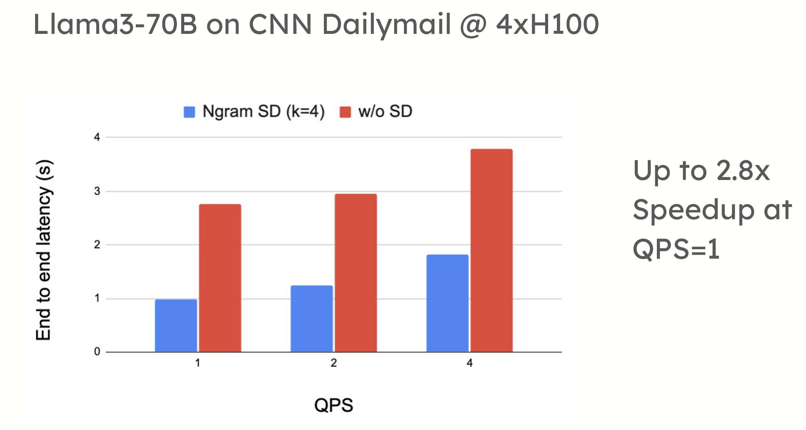
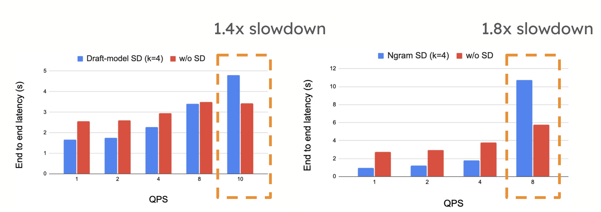
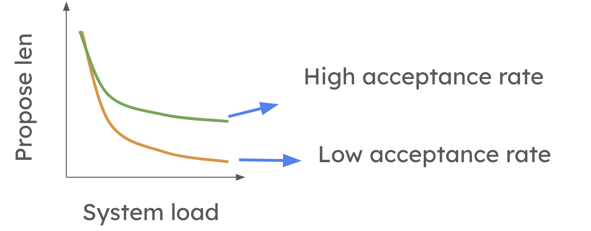

How Speculative Decoding Boosts vLLM Performance by up to 2.8x
Speculative decoding in vLLM is a powerful technique that accelerates token generation by leveraging both small and large models in tandem. In this blog, we’ll break down speculative decoding in vLLM, how it works, and the performance improvements it brings.
This content is based on a session from our bi-weekly vLLM Office Hours, where we discuss techniques and updates to optimize vLLM performance. You can view the session slides here. If you prefer watching, you can view the full recording on YouTube. We’d love to see you attend future sessions - please register!
An Introduction to Speculative Decoding
Speculative decoding (Leviathan et al., 2023) is a key technique in reducing latency during token generation in large language models (LLMs). This approach leverages smaller models to handle simpler token predictions while utilizing larger models to verify or adjust those predictions. By doing this, speculative decoding accelerates generation without sacrificing accuracy, making it a lossless yet highly efficient method for optimizing LLM performance.
Why can speculative decoding reduce latency? Traditionally, LLMs generate tokens one at a time in an autoregressive manner. For example, given a prompt, the model generates three tokens T1, T2, T3, each requiring a separate forward pass. Speculative decoding transforms this process by allowing multiple tokens to be proposed and verified in one forward pass.
Here’s how the process works:
- Draft Model: A smaller, more efficient model proposes tokens one by one.
- Target Model Verification: The larger model verifies these tokens in a single forward pass. It confirms correct tokens and corrects any incorrect ones.
- Multiple Tokens in One Pass: Instead of generating one token per pass, this method processes multiple tokens simultaneously, reducing latency.

As shown in the picture above, the draft model proposes five tokens: ["I", "like", "cooking", "and", "traveling"]. These are then forwarded to the target model for parallel verification. In this example, the third token, "cooking" (should be "playing"), was proposed inaccurately. As a result, only the first three tokens, ["I", "like", "playing"], are generated in this step.
By using this approach, speculative decoding speeds up token generation, making it an effective method for both small-scale and large-scale language model deployments.
How Speculative Decoding Works in vLLM
In vLLM, speculative decoding is integrated with the system’s continuous batching architecture, where different requests are processed together in a single batch, enabling higher throughput. vLLM uses two key components to implement this:
- Draft Runner: This runner is responsible for executing the smaller model to propose candidate tokens.
- Target Runner: The target runner verifies the tokens by running the larger model.
vLLM's system is optimized to handle this process efficiently, allowing speculative decoding to work seamlessly with continuous batching, which increases the overall system performance.

Diagram illustrating how the draft and target runners interact within the vLLM batching system.
To implement speculative decoding in vLLM, two crucial components had to be modified:
- Scheduler: The scheduler was adjusted to handle multiple token slots within a single forward pass, enabling the simultaneous generation and verification of several tokens.
- Memory Manager: The memory manager now handles the KV cache for both the draft and target models, ensuring smooth processing during speculative decoding.

System architecture of speculative decoding in vLLM.
Types of Speculative Decoding Supported in vLLM
vLLM supports three types of speculative decoding, each tailored to different workloads and performance needs:
Draft Model-Based Speculative Decoding

This is the most commonly used form of speculative decoding, where a smaller model predicts the next tokens, and a larger model verifies them. A common example would be using a Llama 68M model to predict tokens for a Llama 2 70B model. This approach requires careful selection of the draft model to balance accuracy and overhead.
Choosing the correct draft model is essential for maximizing the efficiency of speculative decoding. The draft model needs to be small enough to avoid creating significant overhead but still accurate enough to provide a meaningful performance boost.
However, selecting the right draft model can be challenging. For example, in models like Llama 3, finding a suitable draft model is difficult due to differences in vocabulary size. Speculative decoding requires that the draft and target models share the same vocabulary, and in some cases, this can limit the use of speculative decoding. Therefore, in the following sections, we introduce several draft-model free speculative decoding methods.
Prompt Lookup Decoding

An example of prompt lookup decoding. Given the prompt, we build all 2-grams as the lookup key. The values are the three tokens following the lookup key. During generation, we will check if the current 2-gram matches any key. If so, we will propose the following tokens with the value.
Otherwise known as n-gram matching, this approach is effective for use cases like summarization and question-answering, where there is a significant overlap between the prompt and the answer. Instead of using a small model to propose tokens, the system speculates based on the information already available in the prompt. This works particularly well when the large model repeats parts of the prompt in its answers.
Medusa/Eagle/MLPSpeculator

Picture from https://github.com/FasterDecoding/Medusa.In the example, three heads are used to propose tokens for the following three positions. Head 1 is proposing ["is", "\'", "the"] for the first position. Head 2 is proposing ["difficult", "is", "\'"] for the second position. Head 3 is proposing ["not", "difficult", "a"] for the third position. All heads take the output of the last transformer block as the input.
In this method, additional layers (or heads) are added to the large model itself, allowing it to predict multiple tokens in a single forward pass. This reduces the need for a separate draft model, instead leveraging the large model’s own capacity for parallel token generation. Though preliminary, this method shows promise for improving efficiency as more optimized kernels are developed.
Speculative Decoding Performance Insights: Speedups and Trade-offs
Speculative decoding offers significant performance benefits in low-QPS (queries per second) environments. For example, in testing on the ShareGPT dataset, vLLM demonstrated up to a 1.5x speedup in token generation when using draft model-based speculative decoding. Similarly, prompt lookup decoding has shown speedups of up to 2.8x when applied to summarization datasets, such as CNN/DailyMail.


Performance comparison showing spec decode delivering up to 1.5x Speedup at QPS=1 Llama3-70B on ShareGPT with 4xH100 using draft model (turboderp/Qwama-0.5B-Instruct) and up to 2.8x Speedup at QPS=1 Llama3-70B on CNN Dailymail with 4xH100 using n-grams.
However, in high-QPS environments, speculative decoding may introduce performance trade-offs. The extra compute required to propose and verify tokens can sometimes slow down the system when it is already compute-bound, as seen when the number of requests per second increases. In such cases, the overhead of speculative decoding can outweigh its benefits, leading to reduced performance.

As high QPS, we see 1.4x slowdown Llama3-70B on ShareGPT with 4xH100, 1.8x slowdown Llama3-70B on CNN Dailymail with 4xH100
On the Roadmap: Dynamic Adjustments for Better Performance
To overcome the limitations of speculative decoding in high-QPS settings, vLLM is working on implementing dynamic speculative decoding. Feel free to check out the paper for more detail. This is also one of the active research directions in vllm! This feature will allow vLLM to adjust the number of speculative tokens based on system load and the accuracy of the draft model. At a high level, dynamic speculative decoding shortens the proposed length when system load is high. However, the reduction is less pronounced when the average token acceptance rate is high as shown in the picture below.

In the future, the system will be able to automatically modify the degree of speculation at each step, ensuring speculative decoding is always beneficial, regardless of the workload. This will allow users to activate speculative decoding without worrying about whether it will slow down their system.
How to Use Speculative Decoding in vLLM
Setting up speculative decoding in vLLM is straightforward. When launching the vLLM server, you simply need to include the necessary flags to specify the speculative model, the number of tokens, and the tensor parallel size.
The following code configures vLLM in an offline mode to use speculative decoding with a draft model, speculating 5 tokens at a time:
from vllm import LLM
llm = LLM(
model="facebook/opt-6.7b",
speculative_model="facebook/opt-125m",
num_speculative_tokens=5,
)
outputs = llm.generate("The future of AI is")
for output in outputs:
print(f"Prompt: {output.prompt!r}, Generated text: {output.outputs[0].text!r}")The following code configures vLLM to use speculative decoding where proposals are generated by matching n-grams in the prompt:
from vllm import LLM
llm = LLM(
model="facebook/opt-6.7b",
speculative_model="[ngram]",
num_speculative_tokens=5,
ngram_prompt_lookup_max=4,
ngram_prompt_lookup_min=1,
)
outputs = llm.generate("The future of AI is")
for output in outputs:
print(f"Prompt: {output.prompt!r}, Generated text: {output.outputs[0].text!r}")At times, you may want the draft model to operate with a different tensor parallel size than the target model to improve efficiency. This allows the draft model to use fewer resources and has less communication overhead, leaving the more resource-intensive computations to the target model. In vLLM, you can configure the draft model to use a tensor parallel size of 1, while the target model uses a size of 4, as demonstrated in the example below.
from vllm import LLM
llm = LLM(
model="meta-llama/Meta-Llama-3.1-70B-Instruct",
tensor_parallel_size=4,
speculative_model="ibm-fms/llama3-70b-accelerator",
speculative_draft_tensor_parallel_size=1,
)
outputs = llm.generate("The future of AI is")
for output in outputs:
print(f"Prompt: {output.prompt!r}, Generated text: {output.outputs[0].text!r}")Future updates (paper, RFC) will allow vLLM to automatically choose the number of speculative tokens, removing the need for manual configuration and simplifying the process even further.
Follow our docs on Speculative Decoding in vLLM to get started. Join our bi-weekly office hours to ask questions and give feedback.
Conclusion: The Future of Speculative Decoding in vLLM
Speculative decoding in vLLM delivers substantial performance improvements, especially in low-QPS environments. As dynamic adjustments are introduced, it will become a highly effective tool even in high-QPS settings, making it a versatile and essential feature for reducing latency and increasing efficiency in LLM inference.